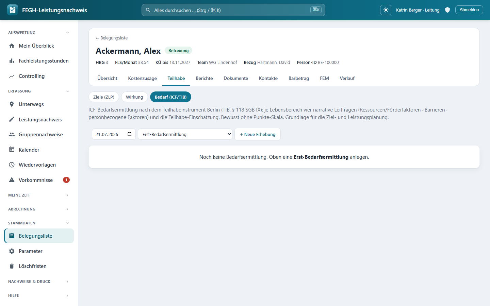

ICF-Bedarfsermittlung (TIB)¶

ICF-Bedarfsermittlung nach dem TIB – narrativ über zwölf Lebensbereiche.
Zu jeder Klientin kannst du die ICF-Bedarfsermittlung nach dem Teilhabeinstrument Berlin (TIB, § 118 SGB IX) pflegen – die strukturierte, fachliche Bestandsaufnahme, aus der später die Ziel- und Leistungsplanung (ZLP) erwächst. Die App bildet die Berliner Systematik bewusst narrativ-dialogisch ab: zwölf Lebensbereiche nach der ICF-Domänenordnung (d1–d9), je Bereich vier Freitext-Leitfragen und eine kategoriale Teilhabe-Einschätzung. Es gibt keine Punkte-Skala – kein „Grad der Beeinträchtigung von 0 bis 4“ –, sondern beschreibende Sätze über Ressourcen, Barrieren und Kontext. Jede Bedarfsermittlung ist als eigener Stichtag versioniert*, sodass Erst- und Folgeerhebungen nebeneinander stehen bleiben und die Entwicklung nachvollziehbar wird.
Du erreichst die Seite über die Fallakte einer Klientin: Reiter Teilhabe → Bedarf (ICF/TIB). Daneben liegen dort die Reiter Ziele (ZLP) und Wirkung*.
Warum keine Skala?
Das Teilhabeinstrument Berlin arbeitet ausdrücklich beschreibend statt punktend. Eine Zahl würde die Lebenslage einer Person auf einen Score verkürzen; das TIB will stattdessen erfassen, was im Alltag gelingt, was nicht und warum. Die App folgt dieser Logik strikt: Sie bietet Freitextfelder und eine grobe Teilhabe-Kategorie, aber keinerlei numerische Bewertung.
Die zwölf Lebensbereiche¶
Die Seite listet zwölf Lebensbereiche in fester Reihenfolge. Sie folgen den ICF-Aktivitäts- und Teilhabe-Domänen d1–d9; die weit gefassten Domänen d8 und d9 sind dabei in mehrere Bereiche aufgeteilt. Jeder Bereich trägt links seine ICF-Domäne als kleinen Code.
| # | ICF | Lebensbereich |
|---|---|---|
| 1 | d1 | Lernen und Wissensanwendung |
| 2 | d2 | Allgemeine Aufgaben und Anforderungen |
| 3 | d3 | Kommunikation |
| 4 | d4 | Mobilität |
| 5 | d5 | Selbstversorgung |
| 6 | d6 | Häusliches Leben |
| 7 | d7 | Interpersonelle Interaktionen und Beziehungen |
| 8 | d8 | Erziehung und Bildung |
| 9 | d8 | Arbeit und Beschäftigung |
| 10 | d8 | Wirtschaftliches Leben |
| 11 | d9 | Gemeinschaftsleben, Erholung/Freizeit, Religion/Spiritualität |
| 12 | d9 | Menschenrechte, Politisches Leben, Staatsbürgerschaft |
Nur relevante Bereiche ausfüllen
Setz je Bereich oben rechts den Haken relevant, wenn er für diesen Fall eine Rolle spielt. Relevante Bereiche werden farblich hervorgehoben (linker Rand). Bereiche, die du komplett leer lässt, kosten keinen Datensatz – die App legt für sie nichts an. Du musst also nicht alle zwölf beschreiben, sondern nur die, die den Fall wirklich betreffen.
Die zwölf Bereiche sind als Stammdaten hinterlegt; die Leitung kann bei Bedarf eigene ergänzen. In der normalen Bedienung arbeitest du mit der vorgegebenen Berliner Liste.
Aufbau einer Erhebung¶
Oben auf der Seite steuerst du, welche Erhebung du bearbeitest, und legst neue an:
- Erhebung (Auswahl): Gibt es schon mehrere Bedarfsermittlungen, wählst du über das Auswahlfeld die gewünschte aus (angezeigt mit Datum und Anlass). Ohne Auswahl zeigt die App die jüngste Erhebung.
- Neue Erhebung: Datum (vorbelegt mit heute) und Anlass wählen, dann + Neue Erhebung.
- Erhebung löschen: nur für die Leitung sichtbar (siehe unten).
Ist noch gar keine Bedarfsermittlung vorhanden, weist die Seite darauf hin, dass du oben eine Erst-Bedarfsermittlung anlegen kannst.
Anlass: Erst- oder Folgeerhebung¶
| Anlass | Bedeutung |
|---|---|
| Erst-Bedarfsermittlung | Die erste Bestandsaufnahme; startet mit leeren Lebensbereichen. |
| Folge-Bedarfsermittlung (Fortschreibung) | Übernimmt die Einschätzungen der jüngsten Erhebung als Ausgangspunkt und schreibt sie fort. |
Fortschreibung startet nicht bei null
Legst du eine Folge-Bedarfsermittlung an, kopiert die App die Einschätzungen der jüngsten vorhandenen Erhebung als Vorlage in die neue – Relevanz-Haken, alle Freitexte, Teilhabe-Status und Unterstützungshinweis. Du überarbeitest also den bekannten Stand, statt alles neu zu tippen. Die alte Erhebung bleibt als eigener Stichtag unverändert erhalten.
Die vier Leitfragen je Lebensbereich¶
Jeder relevante Lebensbereich wird über vier narrative Leitfragen beschrieben und mit einer Teilhabe-Kategorie eingeordnet. Alle Beschreibungsfelder sind Freitext – es gibt hier keine Zahlen und keine Skala.
| Feld | Art | Bedeutung |
|---|---|---|
| relevant | Haken | Ist dieser Lebensbereich für den Fall relevant? Hebt die Karte hervor. |
| Ressourcen & Förderfaktoren | Freitext | Was gelingt? Welche Stärken, Ressourcen und förderlichen Umweltfaktoren gibt es? |
| Barrieren / was nicht gelingt | Freitext | Wo bestehen Schwierigkeiten? Welche Barrieren stehen der Teilhabe entgegen? |
| Personbezogene Faktoren / weiteres | Freitext | Persönliche Faktoren (Haltung, Biografie, Bewältigungsmuster) und alles Weitere. |
| Teilhabe-Einschätzung | Auswahl | Grobe Einordnung, ob eine Beeinträchtigung der Teilhabe vorliegt (siehe Tabelle). |
| Unterstützungsbedarf (Art/Umfang, vorläufig) | Kurztext | Erster, vorläufiger Hinweis auf Art und Umfang der nötigen Unterstützung (max. 255 Zeichen). |
Die drei ausführlichen Felder (Ressourcen, Barrieren, personbezogene Faktoren) haben keine Längenbegrenzung; das Feld Unterstützungsbedarf ist ein Kurztext für einen vorläufigen Hinweis, der später in die ZLP einfließt.
Teilhabe-Einschätzung¶
Statt einer Skala trägst du je Bereich eine der vier Kategorien ein:
| Wert | Bedeutung |
|---|---|
| noch offen | Noch nicht eingeschätzt (Voreinstellung). |
| Beeinträchtigung liegt vor | Eine Beeinträchtigung der Teilhabe besteht in diesem Bereich. |
| Beeinträchtigung droht | Eine Beeinträchtigung droht, ist aber noch nicht eingetreten. |
| keine Beeinträchtigung | In diesem Bereich liegt keine Teilhabe-Beeinträchtigung vor. |
Speichern in einem Rutsch
Du füllst alle Lebensbereiche auf einer Seite aus und speicherst sie mit dem Speichern-Knopf unten gemeinsam. Der Knopf bleibt beim Scrollen am unteren Rand sichtbar. Es gibt kein Zwischenspeichern pro Bereich – ein Klick sichert die ganze Erhebung.
Grundlage für die ZLP¶
Die Bedarfsermittlung ist kein Selbstzweck: Sie ist die fachliche Grundlage der Ziel- und Leistungsplanung. Aus den beschriebenen Barrieren, Ressourcen und den vorläufigen Unterstützungshinweisen leitest du die Leitziele und Teilhabeziele auf dem Nachbarreiter Ziele (ZLP) ab. Die versionierten Folgeerhebungen zeigen dann über die Zeit, ob sich die Teilhabe in den einzelnen Bereichen verbessert – parallel zur Zielerreichung in der ZLP und zur Wirkung.
Zugriff und Datenschutz¶
Team-Scoping
Die Bedarfs-Seite ist – wie Ziele und Verlaufsdoku – nur für Personen mit Klienten-Zugriff erreichbar: Bezugsbetreuerin, Vertretung und Leitung des Teams (klienten_fuer(request.user)). Rollen ohne Klientenbezug – Verwaltung und Admin – haben hier keinen Zugriff, weil ihre Klientenliste bewusst leer ist (DSGVO-Trennung). Der Versuch, die Bedarfsermittlung einer fremden Klientin zu öffnen oder zu speichern, wird serverseitig abgewiesen.
Löschen ist der Leitung vorbehalten
Eine ganze Erhebung zu löschen, sieht nur die Leitung; die App fragt vor dem Entfernen noch einmal nach. Fachlich sinnvoll ist fast immer, stattdessen eine Folge-Bedarfsermittlung anzulegen und den Stand fortzuschreiben – so bleibt die Historie der Teilhabe-Entwicklung erhalten. Für normale Betreuer*innen gibt es keinen Löschknopf.
Besonders schützenswerte Daten (Art. 9 DSGVO)
Die Freitexte zu Ressourcen, Barrieren und personbezogenen Faktoren sind personenbezogene Gesundheits-/Sozialdaten. Sie werden datensparsam behandelt: Die Erhebungen sind zwar versioniert (Fortschreibung nachvollziehbar), die schützenswerten Freitexte werden aber bewusst NICHT in die Historientabelle geschrieben. Wird eine Klient*in anonymisiert, verschwinden mit ihr auch die Bedarfsermittlungen, ohne dass Freitext-Rückstände in der History überdauern.
Für Neugierige: Technik dahinter¶
Nur zur Nachvollziehbarkeit
Diese Seite dient dem Verständnis; für die Bedienung brauchst du sie nicht. Die Namen unten entsprechen dem echten Code.
- Seiten-View:
nachweis/views_bedarf.py→bedarf(request, pk). Lädt die Klient*in überservices.klienten_fuer(request.user), holt die gewählte (Query-Parametererhebung) oder jüngsteBedarfsermittlungund stellt je aktivemTibLebensbereicheine Zeile mit der zugehörigenBedarfsEinschaetzungzusammen. Der Reiter „Belegungsliste“ vs. „Start“ hängt anservices.ist_leitung. - Neue Erhebung:
bedarf_neu(POST). Legt eineBedarfsermittlungan (Anlass validiert gegenTibAnlass.values, sonstERST); beiTibAnlass.FORTSCHREIBUNGkopiert es die Einschätzungen der jüngsten vorherigen Erhebung perbulk_createals Fortschreibungs-Vorlage. - Speichern:
bedarf_speichern(POST). Iteriert über alle aktivenTibLebensbereich, liest je Bereich die Felderlb_<id>_relevant|gelingt|barrieren|person|status|unterst, validiert den Status gegenTeilhabeStatus.values(FallbackOFFEN), begrenztunterstauf 255 Zeichen und legt für komplett leere Bereiche bewusst keinen Datensatz an. - Löschen:
bedarf_loeschen(POST) – hinterservices.ist_leitung(request.user), sonstHttpResponseForbidden; entfernt die ganzeBedarfsermittlung. - Modelle:
nachweis/models.py→TibLebensbereich(name,icf_code,reihenfolge,aktiv),Bedarfsermittlung(klient,anlass,datum,erhoben_von,notiz;HistoricalRecords(excluded_fields=["notiz"])) undBedarfsEinschaetzung(relevant,gelingt,barrieren,personfaktoren,teilhabe_status,unterstuetzung; UniqueConstraint ein Lebensbereich je Erhebung;HistoricalRecords(excluded_fields=["gelingt", "barrieren", "personfaktoren"])– die Art-9-Freitexte bleiben aus der History). Auswahllisten:TibAnlass(Erst / Fortschreibung) undTeilhabeStatus(offen / liegt_vor / droht / keine). - Stammdaten: Migration
nachweis/migrations/0047_tib_lebensbereiche_default.pyseedt die zwölf Berliner Lebensbereiche (d1–d9) idempotent perget_or_create. - Template:
nachweis/templates/nachweis/bedarf.html(einelb-cardje Lebensbereich mit ICF-Code, vier Textfeldern, Status-Auswahl und Unterstützungs-Kurztext; Sticky-Speichern;fa-subnavzu Ziele/Wirkung). - URLs:
nachweis/urls.py→nachweis:bedarf,nachweis:bedarf_neu,nachweis:bedarf_speichern,nachweis:bedarf_loeschen.